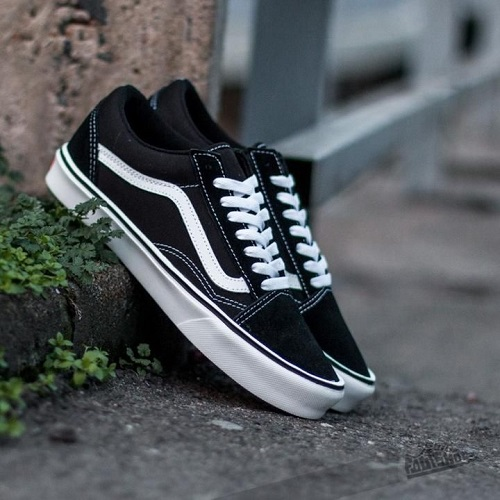
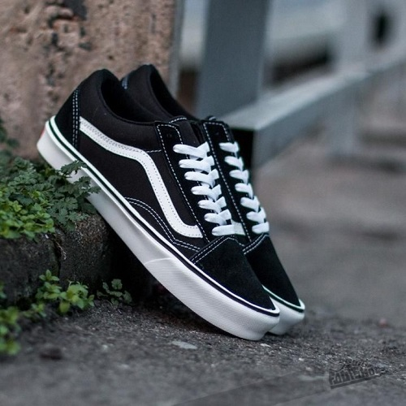
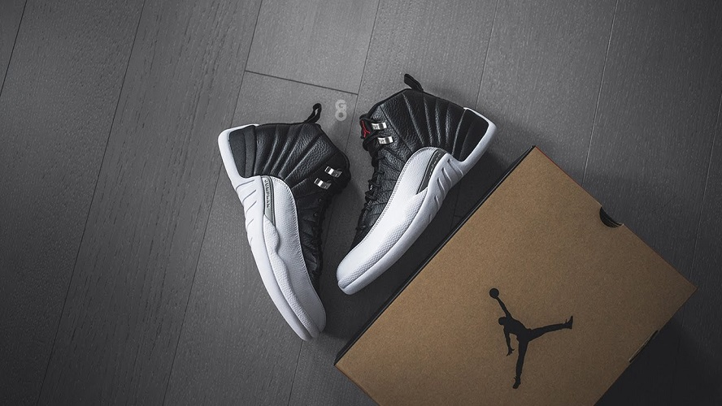
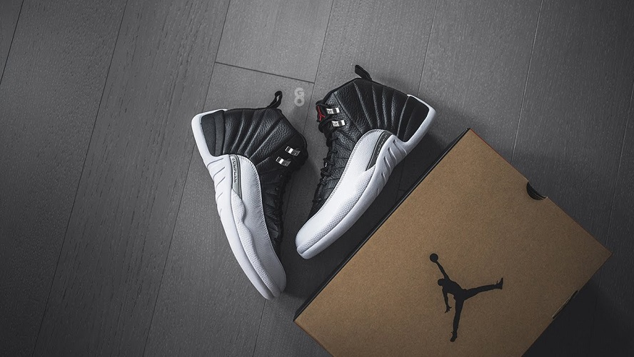

Algunos productos que podes encontrar actualmente en tienda
Nike Air Max 90 "Bacon"
La primera edición de Air Max 90 apareció en 1990. Para la elaboración de estos zapatos se utilizó una red y ante sintético. Nike presentó dos versiones: Hyvent Orange (ahora conocidos como Infrared) y Laser Blue. Ambos modelos tenían cámaras de plástico a rayas a su alrededor, en rojo y azul intenso
Vans Old Skool
El “Old Skool” es el primer zapato de skate de Vans que incorpora paneles de cuero para una mayor durabilidad. Lo que comenzó como un dibujo al azar de Paul Van Doren fue originalmente denominado como "jazz stripe" y se ha convertido en el distintivo inconfundible de la marca Vans
 

Air Jordan Retro 12 "Playoffs"
El Air Jordan 12 "Playoff" se lanzó originalmente en 1997, y Michael Jordan los usó en los Playoffs de la NBA de 1997 junto con la combinación de colores "Flu Game". MJ también tenía los Playoff 12 cuando conectó el gol de la victoria en el Juego 1 de las Finales de la NBA y el juego que aseguró el campeonato en el Juego 6, lo que lo llevó a su quinto título de la NBA
 

New Balance B550
El Air Jordan 12 "Playoff" se lanzó originalmente en 1997, y Michael Jordan los usó en los Playoffs de la NBA de 1997 junto con la combinación de colores "Flu Game". MJ también tenía los Playoff 12 cuando conectó el gol de la victoria en el Juego 1 de las Finales de la NBA y el juego que aseguró el campeonato en el Juego 6, lo que lo llevó a su quinto título de la NBA


Adidas UltraBoost 22
adidas Ultraboost 22 es una zapatilla de running que utiliza una mediasuela Boost de gran rendimiento en cuanto a amortiguación, comodidad y retorno de la energía. En esta entrega se aprecia el esfuerzo de mejora principalmente en el corte superior. Se encuentra disponible en una gran cantidas de colores!